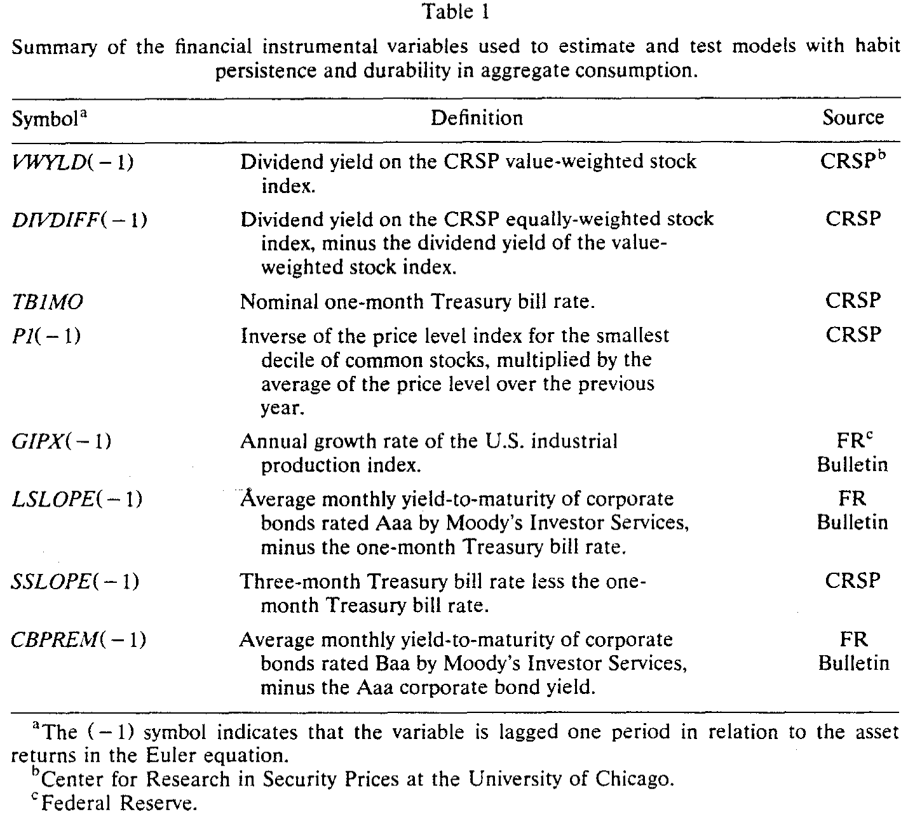
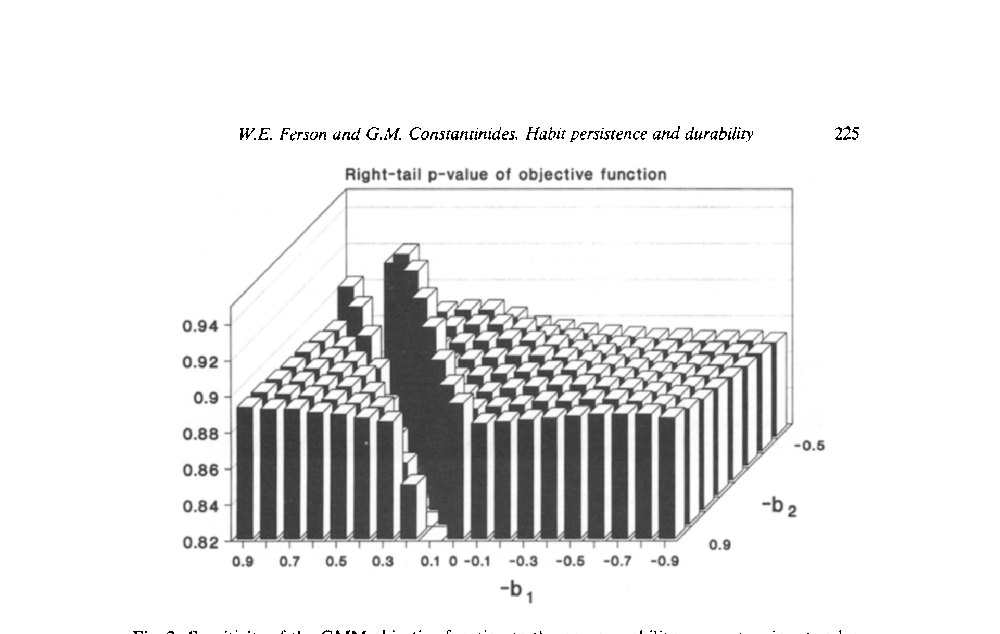
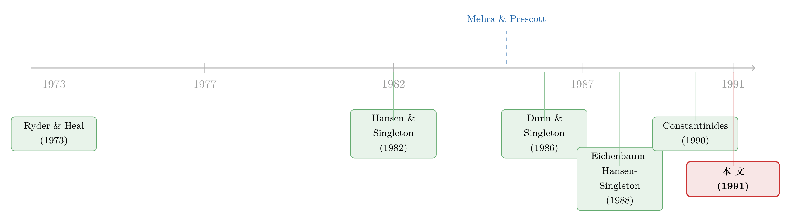

你今天多吃的那一口，是为明天「上瘾」，还是替明天「省下」？
本文读的是 Ferson & Constantinides (1991, Journal of Financial Economics)：把「习惯持续（habit persistence）」和「消费品耐用（durability）」放进同一个消费资本资产定价模型，它们都让效用在时间上不可分，于是滞后消费支出会进入欧拉方程——而它们的系数符号正好相反。估出这个符号，就等于在问：到底哪一个力量更大。作者在月度、季度、年度三种频率上都发现，习惯持续压倒了耐用，从而推翻了此前月度数据里「耐用占优」的主流结论。
1 一个被「昨天」纠缠的消费者
经典的消费资本资产定价模型——也就是 Hansen 和 Singleton (1982, 1983)、Grossman、Melino 和 Shiller (1987) 这一脉所检验的那个——有一个干净到近乎天真的假设：效用在时间上、状态上都是可分的，而且消费品是非耐用的。你今天吃下去的，今天就消化干净，既不替明天留下任何「存货」，也不在你心里留下任何「念想」。明天的你，从一张白纸重新开始做选择。
可现实里的消费，哪有这么利索。
一方面，很多消费支出是耐用的。你这个月买了一辆车，它带来的服务流会一直延续到下个月、下下个月——于是你接下来好几期都不必再买车了。这叫 耐用性（durability）：一笔支出，慢慢释放。
另一方面，人是会上瘾的。你习惯了某个消费水平之后，它就悄悄变成了你的「温饱线」（subsistence level）。明年要是掉到这条线以下，你会觉得难受。为了不难受，你会把消费抹得比理性可分偏好下还要平滑。这叫 习惯持续（habit persistence）：昨天的消费，抬高了今天的胃口。
这两件事，听上去是两码事，可在数学上它们指向同一个后果：消费者今天的边际效用，不再只取决于今天的消费，而要回头看好几期的滞后消费。换句话说，效用变得 时间不可分（time-nonseparable）。一旦不可分，滞后的消费支出就会挤进欧拉方程。
于是一个尖锐的问题冒出来了：既然两者都让滞后消费进了方程，我们怎么把它们分开？
本文的回答，干净得让人拍案：看系数的符号就行。
2 模型：把「习惯」和「耐用」装进同一个方程
这是一篇有完整理论模型的论文，值得我们一步一步把它推开。
第一步，先把「支出」翻译成「服务流」。 单一商品经济里，代表性消费者在 \(t\) 期的支出记为 \(c_t\)。商品是耐用的：每一笔新支出 \(c_t\) 会在第 \(t+\tau\) 期产生 \(\delta_\tau c_t\) 的服务流，权重满足 \(\delta_\tau\ge 0\)、\(\sum_{\tau\ge0}\delta_\tau=1\)。于是 \(t\) 期实际享用到的总服务流是
$$c_t^{*}=\sum_{\tau=0}^{\infty}\delta_{\tau}\,c_{t-\tau}$$
这是「耐用」那一半：今天的享受，是过去若干笔支出共同释放的结果。
第二步，把「习惯」写进效用。 作者用一个时间不可分的 von Neumann–Morgenstern 效用，核心是：消费者的「温饱线」是过去服务流的一个加权和，参数 \(h\ge 0\) 衡量这条线被昨天抬得多高。\(h=0\) 时，偏好对服务流是可分的（但对支出仍未必可分，除非也没有耐用）。这一支思路最早来自 Ryder 和 Heal (1973)，后来 Sundaresan (1989)、Constantinides (1990) 把它做成了「当期服务流减去滞后服务流加权和」的幂效用形式。
第三步——也是真正巧妙的一步——把两半合并。 把服务流和习惯代入，效用可以改写成对一个复合变量 \(C_t\) 的幂效用 \((1-A)^{-1}\sum_t \beta^t C_t^{1-A}\)，其中
$$C_t=\sum_{\tau=0}^{2}b_{\tau}\,c_{t-\tau},\qquad b_0=1$$
注意这里的关键：耐用和习惯，最终都被压缩进了同一组系数 \(\{b_\tau\}\)。\(b_0\) 被标准化为 1，真正承载信息的是 \(b_1,b_2,\dots\)——它们是滞后支出 \(c_{t-1},c_{t-2}\) 在复合变量里的权重。
（这种「把习惯/耐用从消费里整理成一个换元」的手法，本身就是一条值得单独讲的线索，可参见《把『习惯』从消费里减掉：一道让难题自动消失的换元术》。）
第四步，看符号。 作者举了一个指数衰减的例子（\(\delta_\tau\) 与权重都按几何级数衰减，耐用速率 \(\delta\)、习惯参数 \(h\) 与 \(\alpha\)）。两种极端情形一目了然：
$$\delta=0:\quad b_{\tau}=-(1-\alpha)\,h\,\alpha^{\tau-1}<0,\quad \tau\ge 1$$
$$h=0:\quad b_{\tau}=\delta^{\tau}>0,\quad \tau\ge 1$$
也就是说——纯习惯，滞后系数为负；纯耐用，滞后系数为正。两者并存时，符号取决于谁更猛：若 \(\delta\ge\alpha+h(1-\alpha)\)，所有 \(b_\tau\) 为正（耐用全程压倒）；若 \(\delta\le h(1-\alpha)\)，所有 \(b_\tau\) 为负（习惯全程压倒）；若介于两者之间，则近端为正、远端为负。还有一个漂亮的性质：一旦在某个滞后阶 \(\tau\) 上习惯压倒了耐用（\(b_\tau<0\)），那么更远的所有滞后阶都必然是习惯占优。
第五步，推欧拉方程。 考虑消费者在 \(t\) 期少花 \(\varepsilon\)、投到一项回报为 \(R_{t+1}\) 的资产上，再在 \(t+1\) 期多花出来。理性消费者会把这一扰动对所有未来期服务流与温饱线的影响都算进去，令 \(\varepsilon=0\) 处的期望效用最优，整理后得到欧拉方程：
当 \(h=0\) 且无耐用（\(b_\tau=0,\ \tau\ge1\)）时，它退化成 Hansen 和 Singleton (1982) 那个经典的时间—状态可分模型：
$$E_t\left[\beta\left(\frac{c_{t+1}}{c_t}\right)^{-A}R_{t+1}-1\right]=0$$
作者由此构造了一串嵌套模型：时间可分（所有 \(b_\tau=0\)）→ 一阶滞后（仅 \(b_1\ne0\)）→ 二阶滞后（\(b_1,b_2\ne0\)）。整篇论文的实证，就是去估这串模型里 \(b_1\)（以及 \(b_2\)）的符号。
附录里作者还澄清了一个常被混淆的点：在习惯持续下，凹度参数 \(A\) 仍近似等于相对风险厌恶系数，但它不再等于消费对利率的跨期替代弹性的倒数。这一点对后来「把风险厌恶和跨期替代拆开」的 Epstein–Zin 式讨论很关键。
3 识别：一个被「滞后值」污染的老问题
模型这么干净，难点全在实证。作者用的是 Hansen (1982) 的 广义矩估计 (generalized method of moments, GMM)，而且特意用迭代 GMM（Ferson 和 Foerster 1991 发现两步法在大系统里会过度拒绝模型）。欧拉方程对每个资产 \(i\) 定义一个误差 \(u_{i,t+1}\)，条件期望为零；配上 \(L\) 个时点 \(t\) 已知的工具变量 \(z_t\)，就得到 \(N\times L\) 个正交条件，最小化二次型 \(g'Wg\) 即可估参并做过度识别检验。
但这里藏着本文真正的杀招。
误差项的自相关结构是有理论含义的：时间可分模型下 \(u_t\) 是 MA(0)；一阶滞后模型下，因为 \(c_{t+1}\) 不在 \(t\) 期信息集里，\(u_t\) 变成 MA(1)；一般地，若 \(b_j=0\) 对所有 \(j>q\)，则误差为 MA(\(q\))。
可问题是——月度消费数据本身就很脏。测量误差会制造负自相关；而月度支出里有不少分量是插值出来的，又会制造正自相关；再加上 时间加总（time aggregation，Heaton 1990 专门建模过），会让 MA 阶数凭空升一阶，还可能让误差和 \(t\) 期信息集产生虚假相关。
这就埋下了一个陷阱：耐用本身诱发消费增长的负自相关，习惯则诱发正自相关。如果数据里的虚假自相关方向不对，你就会把「测量误差」误读成「习惯」或「耐用」。此前 Dunn 和 Singleton (1986)、Eichenbaum、Hansen 和 Singleton (1988) 在月度数据上估出滞后系数为正，于是判定耐用占优——可这个「正」，会不会只是插值制造的假象？
作者的应对是把识别做钝、再反复试探它的稳健性：他们提出一个修正的原假设
$$H_b:\ b_1=0,\ \text{with an MA(1) error term}$$
也就是说，哪怕 \(b_1\) 真的是零，也允许误差是 MA(1)（把数据问题当成自相关来吸收），再去检验它能不能被推翻。同时，他们做两类实验：一是改变误差的 MA 阶数，二是换工具变量——尤其是不再依赖「滞后消费、滞后收益」这类天然会和被解释变量产生虚假相关的工具，而改用一组既能预测收益、又能预测消费增长、却独立于滞后值的金融变量。
这组工具是本文数据设计的精华，列在表 1 里。

Table 1
它们包括：价值加权指数股息率 VWY.LD(-1)（Campbell-Shiller 1988、Fama-French 1988 证明股息率能预测收益）、等权减价值加权的股息率之差 DIVDIFF(-1)、一个月期国库券利率 TB1MO、最小市值十分位的去趋势价格水平 P1(-1)（Keim-Stambaugh 1986）、工业生产增长率 GIPX(-1)、长短两段期限结构斜率 LSLOPE(-1)/SSLOPE(-1)（Fama 1984、Campbell 1987、Stambaugh 1988）、以及 Baa-Aaa 公司债违约溢价 CBPREM(-1)。用这些「外生于消费滞后值」的金融变量当工具，才能给欧拉方程一个有力而不被污染的检验。
4 数据与结果：当符号翻了过来
数据方面，消费用的是真实、人均的非耐用品支出（经 X-11 季节调整），同时备有耐用品支出和季调前的序列做对照；月度来自 Citibase，季度来自 DRI，年度由 Commerce Department 与 DRI 拼接（1929–1949 用季度数据的年度和、以 1949 水平为拼接因子）。资产端是五个组合：滚动一个月国库券、长期政府债、以及 NYSE 市值十分位中的第 1、5、10 档（小、中、大公司各一），数据来自 CRSP。实际收益用对应消费篮子的价格指数平减。
结果的故事，是一次符号的翻转。
在月度数据上，一旦换掉「滞后消费/收益」这套工具、或允许误差存在时间加总所隐含的自相关，支持耐用的证据就变得很弱；证据反而开始倒向习惯持续。等把战线拉到季度和年度，结论更干脆：习惯持续压倒耐用，而且这个结论对自相关假设、对工具变量的选择都很稳健。作者给出的解释是：耐用的「半衰期」相对习惯可能足够短，以至于在季度、年度这种低频数据里被习惯盖了过去——这与 Heaton (1990) 的发现一致（他找到短命的耐用 + 一些习惯持续的证据），也呼应 Constantinides (1990) 在解释股权溢价之谜时校准出的「习惯持续超过一年」。

Figure 2: Sensitivity of the GMM objective function to the nonseparability parameters in a two-lag
图 2 把这种识别的来龙去脉画了出来：GMM 目标函数对二阶滞后模型里不可分参数的敏感性。它直观地告诉你，数据在哪个参数区域上「说话最响」——而恰恰是在习惯占优（系数为负）的一侧，模型拟合得更好。
作者非常克制地提醒：GMM 的渐近理论在小样本里未必可靠。Tauchen (1986) 发现 50 个年度观测就够用、但略偏向「拒绝太少」；Kocherlakota (1990) 换一组参数却发现「拒绝太多」。两项研究都指出，系数点估计与其标准误在小样本里可能不靠谱。因此本文刻意不从点估计里挖掘过细的含义，只在「符号」这个更稳健的层面上下结论。这是一种值得学习的诚实。
5 文献脉络：习惯，如何从一个数学注脚长成了一条主干
这条线的起点，是一个纯粹的增长理论问题。Ryder 和 Heal (1973) 研究「当期效用依赖于当期消费流与滞后消费流加权和」时的最优消费路径——习惯持续，那时还只是最优增长里的一个数学设定。

真正把它和资产定价接上的，是 Hansen 和 Singleton (1982) 用 GMM 检验欧拉方程的范式——它给了后人一把可以直接「估」偏好参数的螺丝刀。紧接着，Mehra 和 Prescott (1985) 抛出了 股权溢价之谜（equity premium puzzle）：在标准可分偏好下，要解释历史上的股权溢价，需要高得离谱的风险厌恶。这道谜题成了一切「修改偏好」的动力源（关于这道谜的当代回响，可参见《searching-for-the-equity-premium》、以及《把股利从消费里「松绑」：一个让股权溢价大了六倍的小裂缝》）。
于是两条支流出现了。一条走耐用：Dunn 和 Singleton (1986)、Eichenbaum、Hansen 和 Singleton (1988)、Eichenbaum 和 Hansen (1990) 在月度数据上估出滞后系数为正，判定耐用占优。另一条走习惯：Sundaresan (1989) 与 Constantinides (1990) 把习惯做成幂效用，后者更用它校准式地解开了股权溢价之谜——代价是习惯需要「持续超过一年」（这一支后来延伸到生命周期投资，见《年轻人为什么不敢买股票？——把「习惯」请进生命周期的投资账本》）。
Ferson 和 Constantinides (1991)——也就是本文——恰好站在这两条支流的交汇处。它不预设谁对，而是把两者塞进同一个方程，让符号来仲裁，并且把「月度数据为什么会骗人」这件事查了个底朝天。它的结论也很快被同侪强化：Hansen 和 Jagannathan (1991) 用矩不等式约束（也就是后来人人都用的 HJ 距离，见《一把丈量所有定价模型的尺子——HJ 距离》）、Gallant、Hansen 和 Tauchen (1990) 用条件矩，都给习惯持续投了赞成票。
6 评论与延伸（Q&A + 研究方向）
(a) 几个可能的疑问
Q：习惯和耐用既然「都让滞后消费进方程」，凭什么说一个负、一个正就能分开？
因为它们对消费者当下边际效用的影响方向相反。耐用意味着昨天的支出今天还在「供货」，等于今天变相多消费了，边际效用被压低、对再支出的需求下降——表现为滞后系数为正；习惯意味着昨天的支出抬高了今天的「温饱线」，反而让今天更渴求消费、边际效用更敏感——表现为滞后系数为负。本文的几何衰减例子把这点解析地证明了：\(\delta=0\) 时系数 \(-(1-\alpha)h\alpha^{\tau-1}<0\)，\(h=0\) 时系数 \(\delta^\tau>0\)。
Q：那为什么早期月度研究偏偏估出了「正」（耐用）？是他们错了吗？
不一定是「错」，而是月度数据有方向性的污染。插值会制造正自相关，而正自相关恰好和耐用的特征同向，于是容易把数据噪声误读成耐用。本文的贡献正是指出：一旦换掉会引入虚假相关的「滞后值工具」、或允许误差自相关，月度里的耐用证据就垮了。
Q：为什么季度、年度反而比月度更「干净」地支持习惯？
因为耐用的半衰期可能很短。买车这种耐用品的服务流释放，在月度尺度上看得见，但加总到季度、年度就被熨平、被习惯盖过。所以不是「频率越高越可信」，而是不同频率在测量不同时间尺度的现象——这也是本文反复强调要跨频率交叉验证的原因。
Q：凹度参数 \(A\) 到底是风险厌恶，还是跨期替代弹性的倒数？
在时间可分的可分偏好里两者是同一个数；但在习惯持续下，本文附录论证 \(A\) 仍近似等于相对风险厌恶，却不再等于消费—利率替代弹性的倒数。这正是后来 Epstein 和 Zin (1989) 把「风险厌恶」和「跨期替代」彻底拆开的动机所在。
Q：GMM 的结论可信吗？小样本会不会翻车？
作者非常诚实地把这一点摊开：Tauchen (1986) 与 Kocherlakota (1990) 的模拟显示，点估计和标准误在小样本里可能不可靠，拒绝率也可能偏高或偏低。所以本文只在「符号」这一最稳健的维度上下判断，刻意回避对点估计做精细解读。这反而增强了结论的可信度。
Q：这对股权溢价之谜意味着什么？
如果习惯持续确实主导，那么 Constantinides (1990) 那条路——用习惯放大消费风险的有效价格、从而在合理风险厌恶下解释股权溢价——就有了独立的实证支撑。本文等于从「偏好设定的实证识别」这一侧，替习惯持续这条解谜路线背了书。
(b) 几个可能的研究问题与提案
1. 把这套「符号识别」搬到公司债与信用市场。 【经济故事】信用利差里既有违约补偿，也有流动性补偿，而投资者的跨期偏好（习惯 vs 耐用）会影响他们对「坏年景里的现金流」要多少溢价。若习惯持续主导，则衰退期的边际效用更陡，信用利差对宏观状态应更敏感。 【可行性】中。数据可得（TRACE + 宏观工具），识别可沿用本文的「外生工具 + GMM」框架；难点是公司债流动性噪声大，需要干净的流动性度量。
2. 用高频、细分品类的支出数据重估耐用的半衰期。 【经济故事】本文猜测耐用半衰期「短到被季度盖过」，但从未精确测过。今天的银行卡/扫码支付流水可以按品类、按周甚至按天观测。 【可行性】中到高。数据近年可得（支付平台、扫描器数据），可直接估不同 \(\tau\) 上的 \(b_\tau\) 衰减；难点是覆盖面与代表性，以及把个体数据加总回「代表性消费者」时的偏差。
3. 外资持有人的「习惯」是否不同于本土投资者？ 【经济故事】若不同投资者群体的跨期偏好不同，则资产价格的边际定价者构成会随持有人结构变化，跨境资金的进出会改变隐含的习惯参数。 【可行性】低到中。需要把持有人结构和消费/财富数据对上，识别极难（内生持仓），更可能做成校准而非干净因果。
4. 习惯参数是否随商业周期变化？ 【经济故事】本文把 \(\{b_\tau\}\) 当常数估，但「温饱线」的黏性在繁荣与萧条里未必一样——衰退里人们也许更快下调习惯，也许更慢。 【可行性】中。可用状态相依的 GMM 或区制转换扩展本文方程；难点是参数太多、小样本下识别力不足，需要长样本或跨国面板。
参考文献
- Constantinides, G. M. (1990). Habit formation: A resolution of the equity premium puzzle. Journal of Political Economy 98(3), 519–543.
- Dunn, K. B., & Singleton, K. J. (1986). Modelling the term structure of interest rates under non-separable utility and durability of goods. Journal of Financial Economics 17(1), 27–55.
- Eichenbaum, M. S., & Hansen, L. P. (1990). Estimating models with intertemporal substitution using aggregate time series data. Journal of Business and Economic Statistics 8(1), 53–69.
- Eichenbaum, M. S., Hansen, L. P., & Singleton, K. J. (1988). A time series analysis of representative agent models of consumption and leisure choices under uncertainty. Quarterly Journal of Economics 103(1), 51–78.
- Epstein, L. G., & Zin, S. E. (1989). Substitution, risk aversion and the temporal behavior of consumption and asset returns: A theoretical framework. Econometrica 57(4), 937–969.
- Ferson, W. E., & Constantinides, G. M. (1991). Habit persistence and durability in aggregate consumption: Empirical tests. Journal of Financial Economics 29(2), 199–240.
- Gallant, A. R., Hansen, L. P., & Tauchen, G. (1990). Using conditional moments of asset payoffs to infer the volatility of intertemporal marginal rates of substitution. Journal of Econometrics 45(1–2), 141–179.
- Hansen, L. P. (1982). Large sample properties of generalized method of moments estimators. Econometrica 50(4), 1029–1054.
- Hansen, L. P., & Jagannathan, R. (1991). Implications of security market data for models of dynamic economies. Journal of Political Economy 99(2), 225–262.
- Hansen, L. P., & Singleton, K. J. (1982). Generalized instrumental variables estimation of nonlinear rational expectations models. Econometrica 50(5), 1269–1286.
- Heaton, J. (1990). The interaction between time-nonseparable preferences and time aggregation. Working paper no. 3181-90-EFA, MIT.
- Mehra, R., & Prescott, E. C. (1985). The equity premium: A puzzle. Journal of Monetary Economics 15(2), 145–161.
- Ryder, H. E., & Heal, G. M. (1973). Optimal growth with intertemporally dependent preferences. Review of Economic Studies 40(1), 1–31.
- Sundaresan, S. M. (1989). Intertemporally dependent preferences and the volatility of consumption and wealth. Review of Financial Studies 2(1), 73–89.
- Tauchen, G. (1986). Statistical properties of generalized method-of-moments estimators of structural parameters obtained from financial market data. Journal of Business and Economic Statistics 4(4), 397–425.
一点评述。 这篇论文最漂亮的地方，不在于它估出了什么惊人的数字，而在于它把一个看似缠绕的问题还原成了一个符号问题：习惯为负、耐用为正，一道方程同时容下两者，让数据去仲裁。这种「把对立假设嵌套进同一参数」的设计，是计量识别的高级范本。它对识别的处理也极其老实——明知 GMM 在小样本里点估计不可靠，就只在符号层面下结论，并用「换工具、改 MA 阶数、跨频率」三重稳健性把月度数据的脏处一一逼出来。
要说担忧，主要有二。其一，整个识别仍建立在「代表性消费者 + 总量消费」之上，而总量消费数据的测量误差、季节调整与时间加总，本文虽极力对冲，却无法根除；个体微观数据可能会讲一个更细致的故事。其二，参数被当作常数估计，但习惯的黏性是否随周期变化、耐用的半衰期是否随品类结构变化，都被压成了一个均值。我最想看到的后续，是用今天按品类、按高频可得的支付与扫描器数据，去直接测量 \(b_\tau\) 沿滞后阶的衰减形状——那将不再是「符号之争」，而是把习惯与耐用的时间尺度第一次摆到同一把尺子上称重。